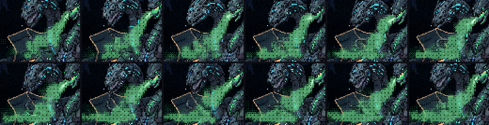
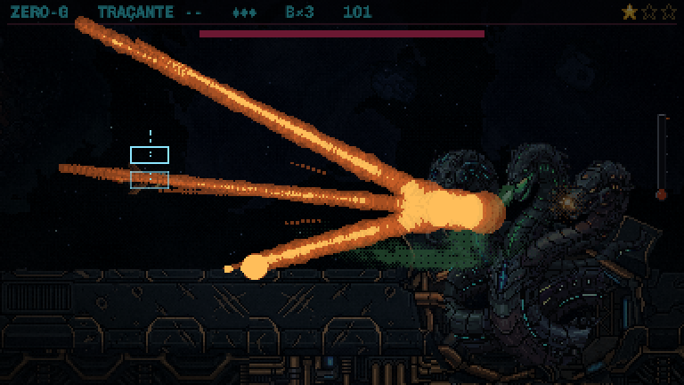
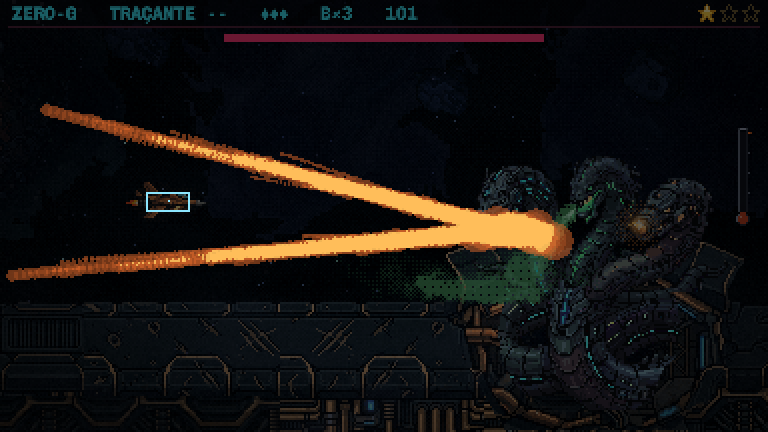
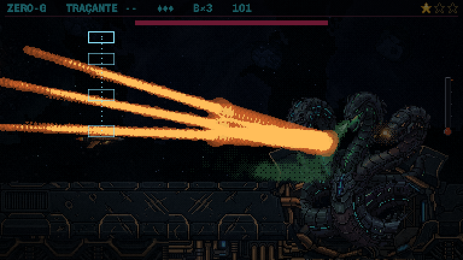
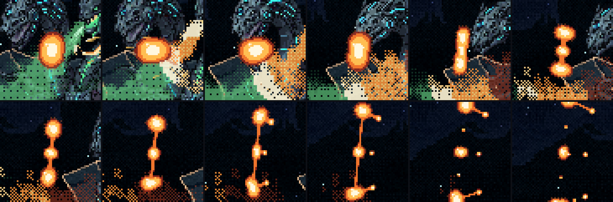
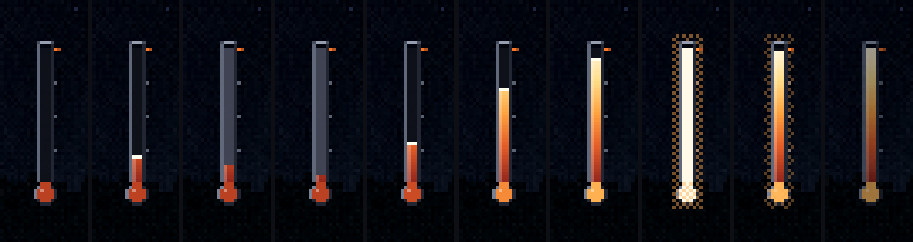
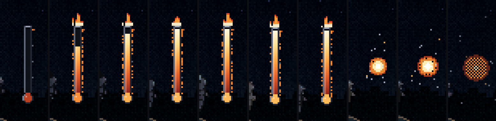

A Serpente: as três esquivas e o termômetro
01/11/2026 · rodada 7 do gás e da faísca · nada foi commitado.
O que você disse sobre a folha anterior:
- "B que depois pinga, o resto ficou bom."
- "no Leque de plasma, ele precisa dar espaço suficiente para a nave conseguir achar o melhor caminho sem tomar dano [...] alguns pingos pequenos ficam bem no espaço criado [...] pensei em criar 3 padroes, um para cada tiro. Quem perceber, aprende a tecnica."
- "a pessoa que não tem o incendiar precisa carregar uma pequena barrinha [...] um termometro pequeno que sobe a temperatura, quando chegar, explode de volta na serpente [...] a vermelha vai carregar alguns segundos [...] e atirar [...] Caso tenha incendiar, a barrinha de termometro pega fogo e explode."
- "A cabeça verde que solta o gás precisa fazer com que o gás saia da boca ou do nariz como um vapor para baixo em forma de leque instável, hoje em dia ele está solto no rosto dela."
Depois você escolheu: o termômetro zera a cada faísca, e as três esquivas como padrões.
O que mudou:
- O vapor sai da boca da verde e escorre para baixo, num leque que balança. No casco, ele vira um banco baixo na frente dela.
- Cada faísca tem um padrão, e cada padrão ensina uma esquiva: o leque (sair da linha), os trilhos (ficar parado), a fila (continuar andando). A geleia é a B que depois pinga, e as gotas só saem por trás.
- O termômetro fica ao lado dela. Sobe com os tiros que passam pelo gás, zera a cada faísca e, cheio, explode de volta nela. Com a carta, pega fogo e estoura.
- A laranja carrega 2,5 s antes de cada faísca (antes eram 0,6 s).
O vapor da verde
- Sai da frente da mandíbula aberta e desce a uns 50°, passando por baixo do queixo da azul. Testei 36° primeiro, mas aí o balanço deitava o vapor na cara da azul, que é o mesmo "solto no rosto".
- O leque é instável: a direção oscila, a abertura abre e fecha, e o vapor sai em baforadas.
- A raiz acompanha a cabeça. No idle ela mexe até uns 4 px (medi nos 9 quadros), e o vapor continua saindo da boca.
- No vácuo ele não cai: é ela que sopra para baixo. No casco ele se espalha pela chapa e vira um banco baixo que avança na frente dela. É ali que a nave esquenta o gás.

As três esquivas
O arco da laranja bate atrás de um bolsão do sopro, e a explosão arremessa o bolsão para longe do golpe. É assim que ela mira. O jeito de faiscar já entrega o padrão:
- 1ª faísca, o leque (um arco): uma bola grande mirada na nave rasga atravessada em três, e o pedaço do meio vem na linha da nave. Sair da linha para um vão.
- 2ª faísca, os trilhos (um arco que se bifurca): duas bolas, uma mirada 30 px acima da nave e outra 30 px abaixo. Cada uma rasga ao longo do caminho e vira uma fileira. Ficar parado: o vão é a linha da própria nave.
- 3ª faísca, a fila (três arcos em ritmo, 0,4 s entre eles): três bolas, cada uma mirada onde a nave está naquele golpe. Elas voam inteiras e só rasgam depois. Continuar andando.
A geleia pinga só por trás. A gota sai das costas do pedaço, mais devagar que ele, e fica na mesma pista (as gotas que saíam para os lados caíam nos vãos). Ela é menor e tão quente quanto o pedaço, então não vive mais que ele. A gotinha que o fio arrebentado deixa no vão do leque apaga na hora.




Medido quadro a quadro, contra a hitbox da nave e o raio visível de cada pedaço (com o balanço):
- Fazendo a esquiva certa, a menor folga no vídeo inteiro foi de 12,7 px (uma gotinha). Nenhum toque.
- Errando a técnica, a nave leva dano em todos os casos: parada na linha do leque, desviando 27 px nos trilhos, ou parando depois de qualquer golpe da fila.
O termômetro
- Onde fica: ao lado dela, à direita, perto da boca da laranja. A corrida se lê de uma vez: a boca dela enchendo e o termômetro subindo. Ele aparece com o sopro e some quando a habilidade acaba.
- O que enche: só tiro que atravessa o gás, contando o gás mais grosso que o tiro cruzou. Tiro no corpo dela não conta. Calibrei para uns 12 tiros seguidos no banco, cerca de 1,5 s. Se a nave para de atirar, ele esfria devagar.
- Zera a cada faísca (sua escolha): a faísca queima o gás que a nave esquentou, e o gás novo sai frio. O vidro escurece e a coluna desce. Tiros que ainda estavam no ar não contam.
- Cheio: ele pisca branco, e o fogo corre pelo banco, sobe o sopro até a boca da verde e explode na cara dela. A explosão respinga geleia na laranja e na azul, e a verde para de soprar. É o contra-ataque que você aprovou, agora saindo do sopro novo.
- Com a carta INCENDIÁRIO: no primeiro toque no gás, o termômetro dispara até o topo, pega fogo e estoura em cacos.


Uma consequência do vapor para baixo
- Agora o gás que a nave alcança fica baixo, no banco sobre o casco. A parte de cima do sopro está na frente do corpo dela, e o tiro bate nela antes. Para encher o termômetro, é preciso voar baixo.
- Isso criou um ritmo. A 1ª janela é a mais fácil, porque nada está voando ainda: quem desce cedo quebra antes de qualquer leque sair. A 2ª é difícil, porque desviar do leque tira a nave do gás. A 3ª combina com a esquiva dos trilhos, já que ficar parado deixa a nave atirando. A fila só aparece para quem não esquentou o gás.
Para você decidir
- O vapor: agora dá para ver que ele sai da boca da verde?
- As três esquivas: dá para ler qual vem pelo jeito que a laranja faísca (um arco, um arco bifurcado, três arcos)?
- O termômetro: o lugar (à direita dela) e o ritmo (~12 tiros, 1,5 s) estão bons? E está ok o gás ficar baixo, obrigando a voar baixo para esquentar?